Om oss
New Life Mission - Aid ble etablert i august 1978 og har siden arbeidet målrettet med misjon og humanitært bistandsarbeid. Vårt engasjement startet i Kenya, der vi bygget barnehjem for barn som levde under svært vanskelige forhold i fengsler sammen med sine mødre. Dette ble begynnelsen på et omfattende internasjonalt arbeid som i dag omfatter prosjekter i Afrika og Øst-Europa.
Gjennom årene har vi sendt tusenvis av tonn med nødhjelp til familier, skoler og helseinstitusjoner i flere Øst-Europeiske land. I Kenya har vi etablert og rehabilitert barnehjem, samt grunnlagt førskoler, grunnskoler og videregående skole. I tillegg driver vi enkeprosjekter, sosialt arbeid i slumområder, landsbyutvikling og vannprosjekter med fokus på bærekraft og hjelp til selvhjelp.
Vi samarbeider tett med lokale aktører, myndigheter og det politiske miljøet for å sikre at hjelpen gir varige resultater og bidrar til positiv samfunnsutvikling.
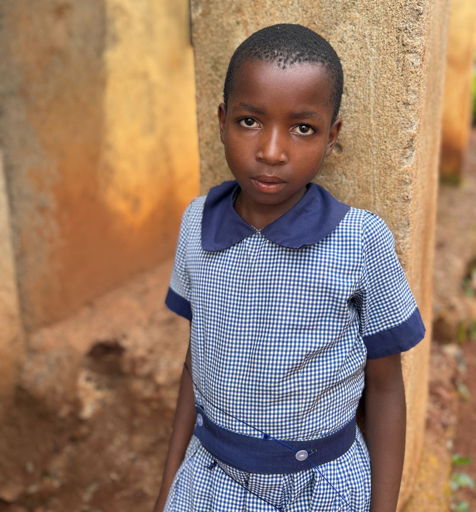
Visjon
Vi ønsker å se mennesker som lever under vanskelige kår få muligheten til å blomstre – å vokse åndelig, leve med verdighet, selvstendighet og håp.
Vi vil at alle skal ha tilgang til livets grunnleggende behov og muligheten til å bygge en bærekraftig framtid for seg selv.
Misjon
New Life Mission - Aid arbeider der offentlig støtte og strukturer ikke strekker til.
Vi møter behovene i lokalsamfunnene direkte – drevet av Kristi kjærlighet og troen på at ekte kjærlighet vises gjennom handling.
Sammen med lokale partnere gir vi humanitær hjelp og støtter åndelig vekst. Vi legger vekt på bærekraft, eierskap, selvhjulpenhet og styrking av lokalsamfunn, slik at mennesker kan få et bedre liv og bli uavhengige av bistand utenfra.
Menneskene
-
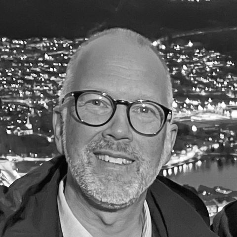
David Enok NilsenDaglig leder -
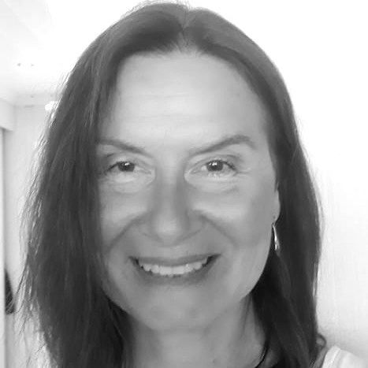
Ina WinjeFundraiser og prosjektkoordinator -
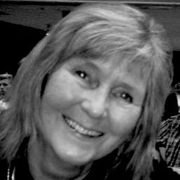
Runi RogersAdministrasjonssekretær -
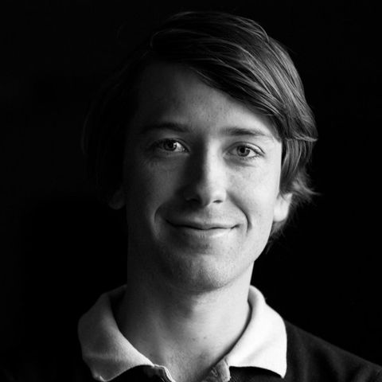
Vegar MikalsenTv- og videoprodusent -
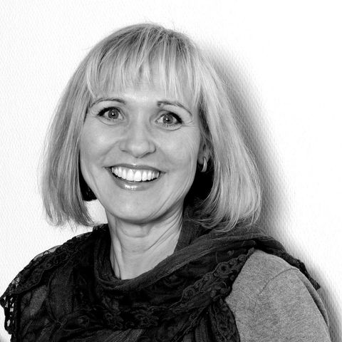
Liv Randi LindsethProsjektleder, Clean the Country -
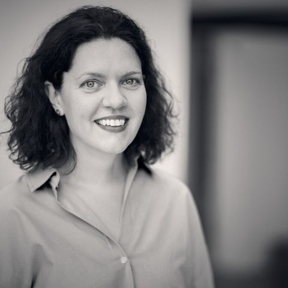
Joanna PoznalskaNasjonal leder / Styreleder, Polen -
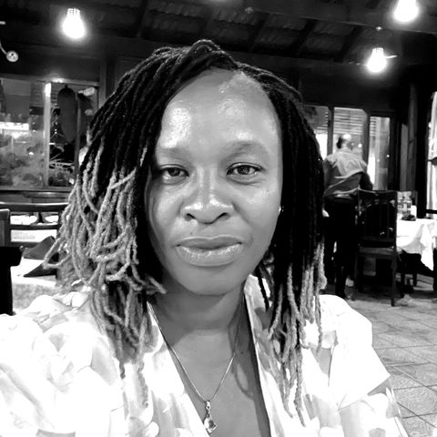
Norah Gakii NyagahNasjonal leder, Kenya -
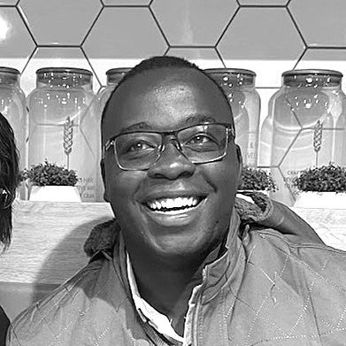
Steven Brian OmondiProsjektleder, Kenya -
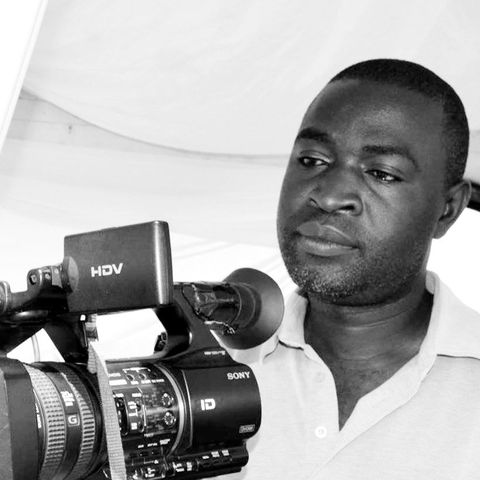
George R. OchiengProsjektleder og mediaansvarlig, Kenya -
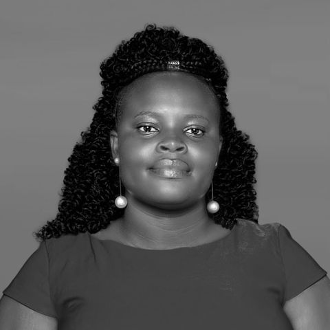
Mary OchiengLeder, Deaf Aid -
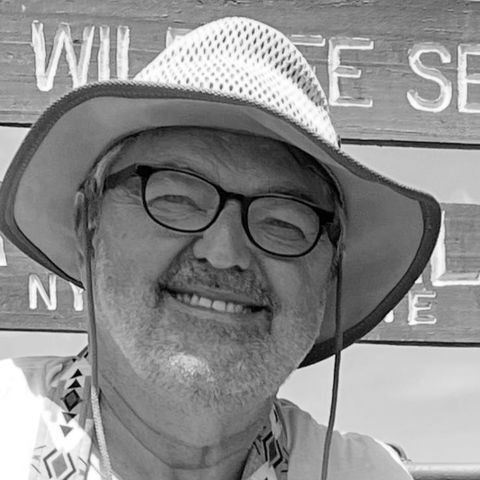
Rudy DevinckSpesialrådgiver, Belgia -
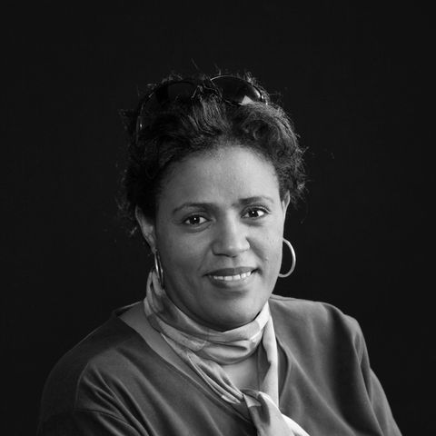
Rebecca SkrettebergStyreleder -
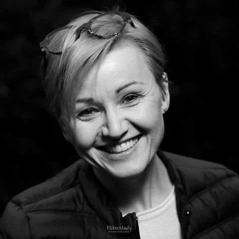
Monika BrandysGrunnlegger, NLM Polen. Styremedlem -
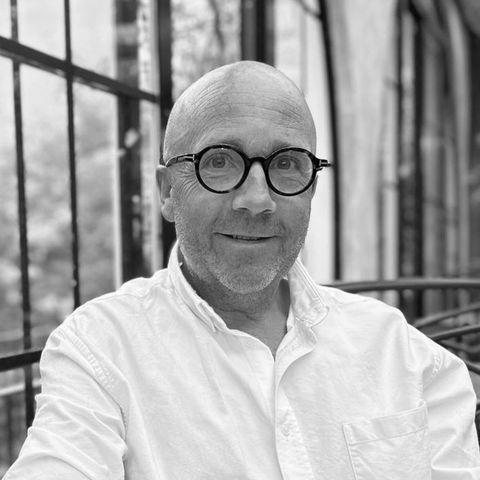
Tony GulbrandsenStyremedlem -
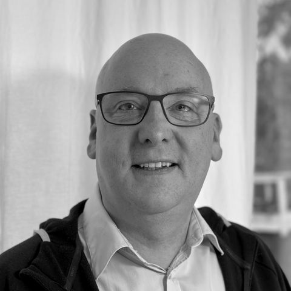
Geir BrudeliStyremedlem -
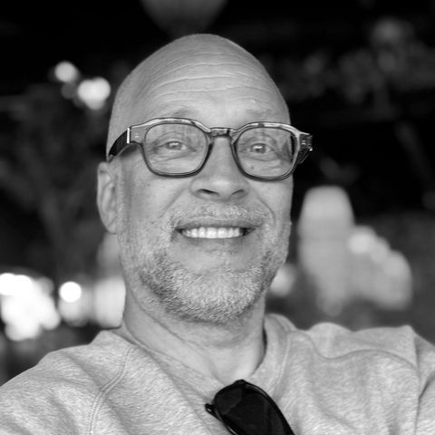
Lennarth Georg N. GrytingStyremedlem
Prosjekter
Se alle prosjekter
Bistand og nødhjelp
Vi løfter mennesker ut av fattigdom ved å gi livsviktig bistand, forbedre infrastruktur, og gi trygghet og omsorg.

Utdanning
Utdannelse til barn og unge gir muligheter, kunnskap og varige verdier til enkeltmennesker, familier og lokalsamfunn.

Misjon
Å nå ut til mennesker med evangeliet er en viktig og naturlig del av alle våre prosjekter. Den kristne tro er fundamentet i vårt arbeid.

Samfunnsutvikling
Gjennom aktivt samarbeid med lokale partnere har vi et sterkt fokus på miljø, som å rydde Kenya for plast og skape sunne og trygge arbeidsplasser.
Støtt nå!
Gi en gave med Vipps, bank eller SMS, eller bli fast partner og støtt arbeidet hver måned.
Bli partner